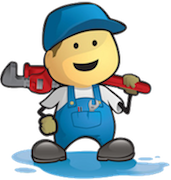

Pipes supports the notion of transformational paths (see Pipe.getPath()). It is possible to know how an object at the end a Pipe was transformed through all the stages of the Pipe.
Pipe<Object, Object> pipeline = new Pipeline<Object,Object>(...);
pipeline.setStarts(new SingleIterator<Object>(o));
while(pipeline.hasNext()) {
Object object = pipeline.next();
List<Object> path = pipeline.getPath();
}For example, assume a Pipeline with the following self-describing pipes: NumCharsPipe, NumToWordPipe, NumCharsPipe.
Pipeline<String,Integer> pipeline = new Pipeline(new NumCharsPipe(), new NumToWordPipe(), new NumCharsPipe());
pipeline.setStarts(Arrays.asList("lady","in","red"));
while(pipeline.hasNext()) {
pipeline.next();
System.out.println(pipeline.getPath());
}The System.out yields:
[lady, 4, four, 4]
[in, 2, two, 3]
[red, 3, three, 5]NOTE: See PathPipe<S> implements Pipe<S,List> for a pipe that takes in an object and emits the path thus far.